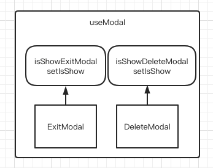

背景
在常规的业务开发中，经常会用到 Modal 组件。当笔者在开发实际项目时，业务需求要求我在同一个页面分别使用 2-3 种弹窗。理论来说此时只需要使用一个 Modal 组件，定制不同内容即可。但是痛苦常常来源于生活，由于团队人员变动、公共组件管理不够规范、重复造轮子等各种原因，我们往往需要接入各种不同种类的弹窗组件，比如在下面的代码中，我使用的 ExitModal 和 DeleteModal 就出自不同人之手：
1
2
3
4
5
6
7
8
9
10
11
12
13
14
15
16
17
18
19
20
21
22
23
24
| const App = () => {
const [isShowExitModal, setIsShowExitModal] = useState(false);
const [isShowDeleteModal, setIsShowDeleteModal] = useState(false);
return (
<div>
<Button onClick={() => setIsShowExitModal(true)}>显示退出弹窗</Button>
<Button onClick={() => setIsShowDeleteModal(true)}>显示删除弹窗</Button>
<ExitModal
visible={isShowExitModal}
onOk={() => {
console.log('成功退出');
setIsShowExitModal(false);
}}
onCancel={() => setIsShowExitModal(false)}
/>
<DeleteModal
visible={isShowDeleteModal}
onOk={() => console.log('成功删除')}
onCancel={() => setIsShowDeleteModal(false)}
/>
</div>
);
};
|
该组件的状态依赖如下所示：

问题
可以看到，在现有场景下，我们封装业务组件如果以这种模式处理，往往会面临以下问题：
- 业务组件需要维护和直接依赖 Modal 组件的显隐状态，Modal 组件越多，冗余的 ui 状态越多
- 如果 Modal 组件在封装时没有使用 createPortal 的 API，Modal 组件就会挂载到业务组件的真实 dom 中，影响业务组件的 dom 树
优化
首先我们期望的是在优化之后能够保证业务组件和 Modal 组件的状态脱钩，业务组件仅仅需要调用第三方提供的 show 方法调起弹窗，后续的操作都交给第三方处理。其次，我们期望在优化之后，无论 Modal 组件之前是怎么设计的，业务方调用时都会将其挂载到 body 下，不影响自身的 dom 结构。
因此，笔者封装了 useModal 这个 hook，接受 Modal 组件，返回统一的 Modal 代理。由代理解决上面的两个问题。具体使用如下：
1
2
3
4
5
6
7
8
9
10
11
12
13
14
15
16
17
18
19
20
| const App = () => {
const exitModal = useModal(ExitModal);
const deleteModal = useModal(DeleteModal);
const onShowExitModal = useCallback(() => {
exitModal.show({
onOk: () => console.log('退出成功'),
});
}, [exitModal]);
const onShowDeleteModal = useCallback(() => {
deleteModal.show({
onOk: () => console.log('删除成功'),
});
}, [deleteModal]);
return (
<div>
<Button onClick={onShowExitModal}>显示退出弹窗</Button>
<Button onClick={onShowDeleteModal}>显示删除弹窗</Button>
</div>
);
};
|
此时，业务组件只需要依赖不同 modal 实例的代理，调用代理的 show 方法调起弹窗，不需要手动修改 visible 状态和在 renderTree 中插入 Modal 组件。
UseModal 详解
使用 useModal 后的 uml 图如下所示：

useModal 接受实现了 Modal 接口的 React 组件，然后返回一个代理，该代理提供了 show 和 destroy 方法。窗口的 ui 状态和组件挂载逻辑交由代理控制，业务组件只需要知道代理的接口，即可实现窗口管理。
下面介绍一下 useModal 实现 show 和 destroy 的基本原理：
useModal 会维护具体的窗口实例的 visible 状态和真实的 Modal 组件，在业务调用 show 方法时，useModal 会调用 ReactDOM 的 render 方法将 Modal 组件挂载到 body 的 dom 下，在业务调用 destroy 方法是 ReactDOM 的 unmountComponentAtNode 方法卸载状态。
具体逻辑如下：
1
2
3
4
5
6
7
8
9
10
11
12
13
14
15
| const unmount = useCallback(() => {
const result = ReactDOM.unmountComponentAtNode(mountNode);
if (result && mountNode.parentNode) {
mountNode.parentNode.removeChild(mountNode);
}
}, [mountNode]);
const render = useCallback(
(modalProps: IModalProps) => {
document.body.appendChild(mountNode);
setTimeout(() => {
ReactDOM.render(<Modal {...modalProps}></Modal>, mountNode);
});
},
[mountNode]
);
|
进一步思考
当前的 useModal 很好的实现了状态解耦，但是可以看到它给所有 Modal 组件增加了一层约束，即所有弹窗组件都要满足 Modal 这一接口。
实际业务中，可能会遇到 Modal 组件不符合这一接口的，此时我们可以通过进一步实现 ModalAdapter 等方式解决问题。